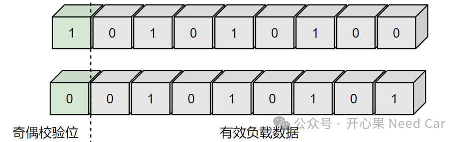
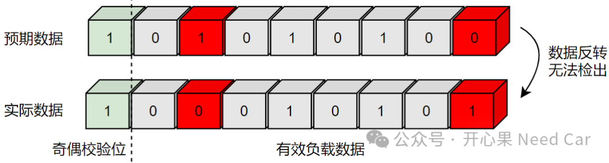
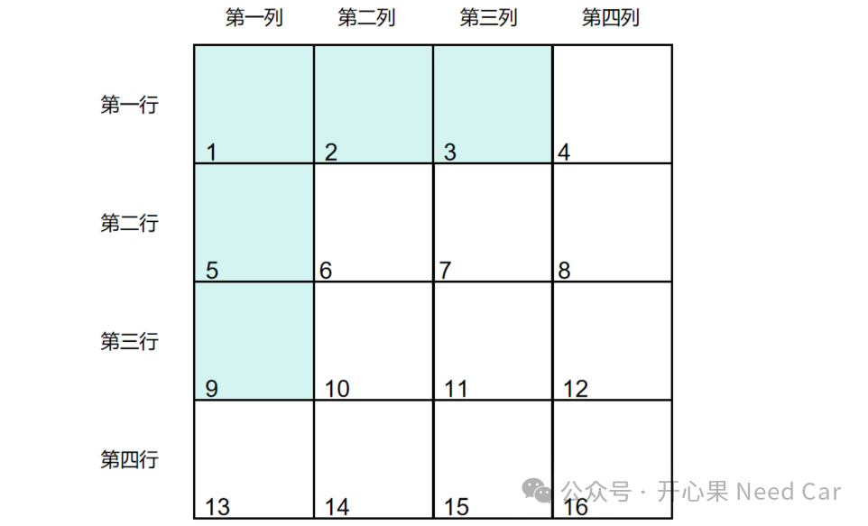
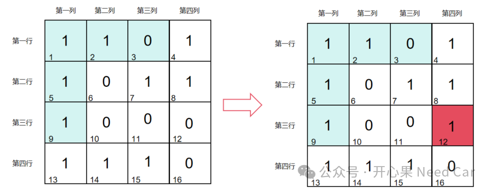

搞工程的小伙伴，或多或少地会碰到一些关于ECC（Error Correction Code，错误校正码）问题。我们也知道，ECC带来的问题不容忽视。所以，很有必要深入地聊一聊ECC。ECC包含两个功能：错误检查、错误纠正。我们所处的生活环境，随处都有无线电磁干扰。而车辆控制器，所处的工作环境，也会碰到雷雨、磁场等场景。在如上这些环境中工作的CPU，与内存进行数据交互时就可能发生内存反转，也就是数据流中的某个bit由0反转成1，或者由1反转成0。如果这些反转的bit发生在某些重要数据中，对系统的稳定将产生极大的影响，甚至造成一定的安全隐患。bit反转示意如下：
既然bit反转会带来严重的安全隐患，那么，如何及时发现并纠正呢？答：ECC应用而生。既然包含ECC功能的内存可以发现并且纠正bit错误，那么，其必然有一定的方式/方法。我们先从奇偶校验（parity check）原理开始理解ECC的纠错机制，我们知道，计算机以二进制形式（0或者1）传输数据，如果传输的数据中，1的个数为偶数，那么奇偶校验位设置为0；如果传输的数据中，1的个数为奇数，则在奇偶校验位设置为1，以此确保传输的数据中，所有1的个数为偶数，示意如下：

如果接收端收到数据以后，发现1的个数为奇数，则表明数据有问题，这就是最基本的错误检测原理。可是，如果恰好某两个bit均反转，且一个是由1反转成0，另一个由0反转成1，如此，奇偶校验就无法检出错误，示意如下：

除了如上的工况，如果多个bit反转，且一半bit由1反转成0，一半bit由0反转成1，奇偶校验也无法检出问题。而且，奇偶校验无法识别错误的位置，如果无法识别错误的位置，也就无法纠正错误。所以，鉴于奇偶校验的这两个缺点，汉明码（Hamming Code）出现了。
（一）汉明码工作原理
简化问题，基于16bit讨论汉明码工作原理，示意如下：
1、将16bit转换成4*4bit矩阵，其中，青色表示校验bit，不存储数据，白色表示要存放的数据。汉明码的本质也是基于奇偶校验，那么，到底如何校验的呢？结合下图，说明一下校验规则：

bit1负责校验所有bit（16个bit），bit 2负责校验第二、第四列；bit3负责校验第三、第四列；bit5负责校验第二行、第四行；bit9校验第三行、第四行。
假设：某个bit发生了反转，由0反转成1，示意如下：

1、由于bit1为1，而所有1的个数为11，说明存在错误，但是此时不知道错误位置在哪个bit；
2、bit2为1，由于bit 2负责校验第二、第四列，且第二、第四列，1的个数为5，说明问题bit在第二或者第四列；3、bit3为0，bit3负责校验第三、第四列，且第三、第四列，1的个数为5，说明问题bit在第三或者第四列。所以，综合bit2、bit3识别，问题bit可以锁在第四列；4、bit5为1，bit5负责校验第二行、第四行，且第二行、第四行，1的个数为6，说明第二行或者第四行没有问题；4、bit9为1，bit5负责校验第三行、第四行，且第三行、第四行，1的个数为5，说明第三行或者第四行有问题。所以，综合bit5、bit9识别，问题可以锁定在第三行。综上，问题锁定到bit12，之后即可将该bit进行纠错（进行反转）。如上就是ECC的检查和纠错基本原理，对应到实际使用的芯片，纠错的bit位个数、数据量、方法可能会有所不同。以TC3xx系列芯片为例，其具有1 bit或者2 bit错误的纠错能力，1 bit、2 bit、3 bit错误发现能力，也可以检测全0或者全1的场景。
对于PFlash，每32 bytes（256 bit，One PFlash Page）会拓展22 bit校验位；对于DFlash，每8 bytes（64 bit，One DFlash Page）会拓展22 bit校验位。
Q1：具有ECC功能的芯片，性能是否降低？
A1：具有ECC功能的芯片，势必会降低部分性能。有人说会降低2%~3%的性能，无从考证。但是，相比于安全，损失一些性能是可以接受的。
Q2：ECC功能，需要一直启用吗？
A2：ECC功能的使能或者关闭，可以通过特定寄存器实现。但是，至于是否一直启用ECC功能，需要结合场景讨论。你可能会好奇，难道有需要关闭ECC的时候？答：有的。有些芯片，处理一些功能时，会要求关闭ECC检查，比如：RH850 C1MA2，在进行密钥存储时，需要关闭ECC检查，密钥存储后再使能ECC功能。
提示：使能ECC功能前提下，在进行Flash的programming时，如果出现ECC问题，ECC错误状态会自动生成；从内存读取数据时，硬件也会自动检测ECC。
点击下方关注，一起聊聊Autosar/嵌入式，如果需要，联系作者进群，给你更专业的解答